In Progress
- AUV (Personal)
- BLDC Motor (Personal/Course)
- Tether Spool (Design Team)
- Final Torpedo Revision (Design Team)
- Gearbox (Course)
Future/Paused Projects
- Rotating Parallel SCARA Arm (Paused)
- Ball balancing robot (Paused)
- Distortion Pedal (Planned)
- 3D Scanner
Robotics Projects
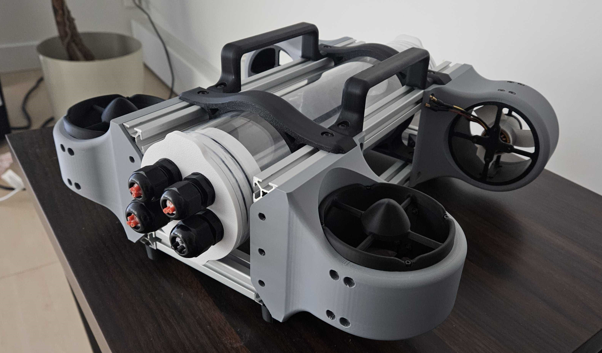
Autonomous Underwater Vehicle
February 2026 - TBD
-
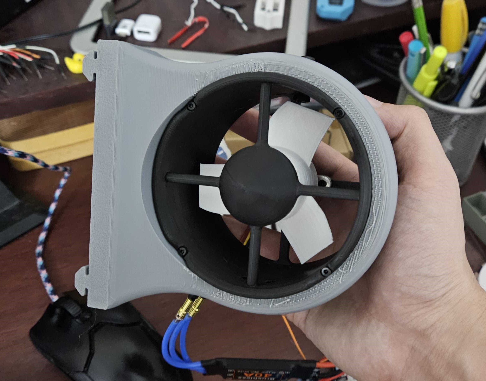
My AUV project is an ongoing collaboration between me and another student with two main objectives in mind: to push our software and computer vision skills and to complete a project with a significant scope, comparable to that of a design team. The goal of this project is to create a fully autonomous underwater drone that can topographically map its environment and detect objects such as trash in the water. As added depth I have been innovating and designing many traditionally off the shelf components such as our thrusters and motor controllers from scratch.Currently the thruster designs use A2212 drone motors mounted to a custom propeller and thruster body. The electronics enclosure tube uses electrical cable glands with custom inserts as penetrators. The initial design goal of the AUV is to have 4 degrees of freedom from the 4 thrusters, and vertical control through a PID controlled ballast.
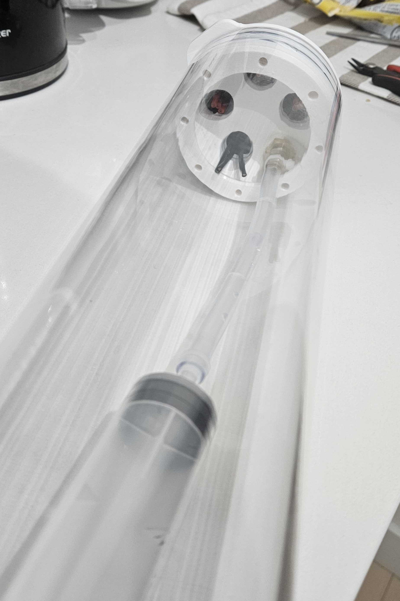
Eventually plans are to upgrade to include more thrusters and potentially buy higher quality motors. So far a significant portion of testing has focused on waterproofing the electronics enclosure and testing methods of penetrating it with cables and a tube to bring water into the ballast without exposing any electronics to moisture.My design for the removable endcaps uses O-rings I cut out of rubber strips, teflon tape, and a 3D printed cap to seal the ends of the acrylic tube. So far this setup has been tested at low depth for around 30 hours under submersion with no leaks. The thruster designs have been individually tested and are now being implemented together on the AUV structure.
Once working remote control has been achieved the next steps are to implement our Raspberry Pi using ROS and get computer vision working so we can begin developing the software aspects of the project. For initial remote control testing both an ethernet tether and low frequency (27MHz) radio frequencies are being considered for low depth operation.
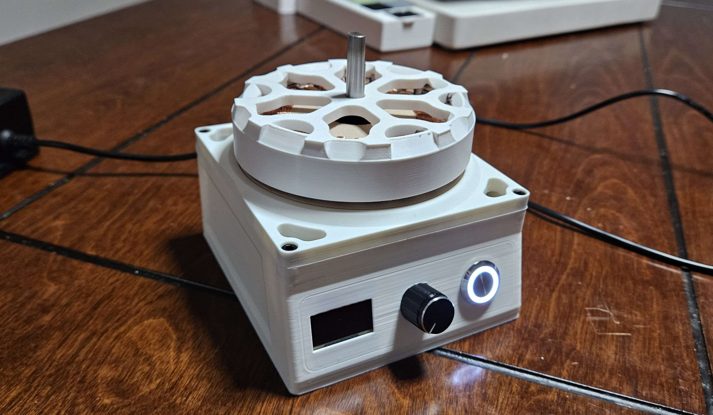
Custom Designed BLDC Motor
February 2026 - March 2026
-
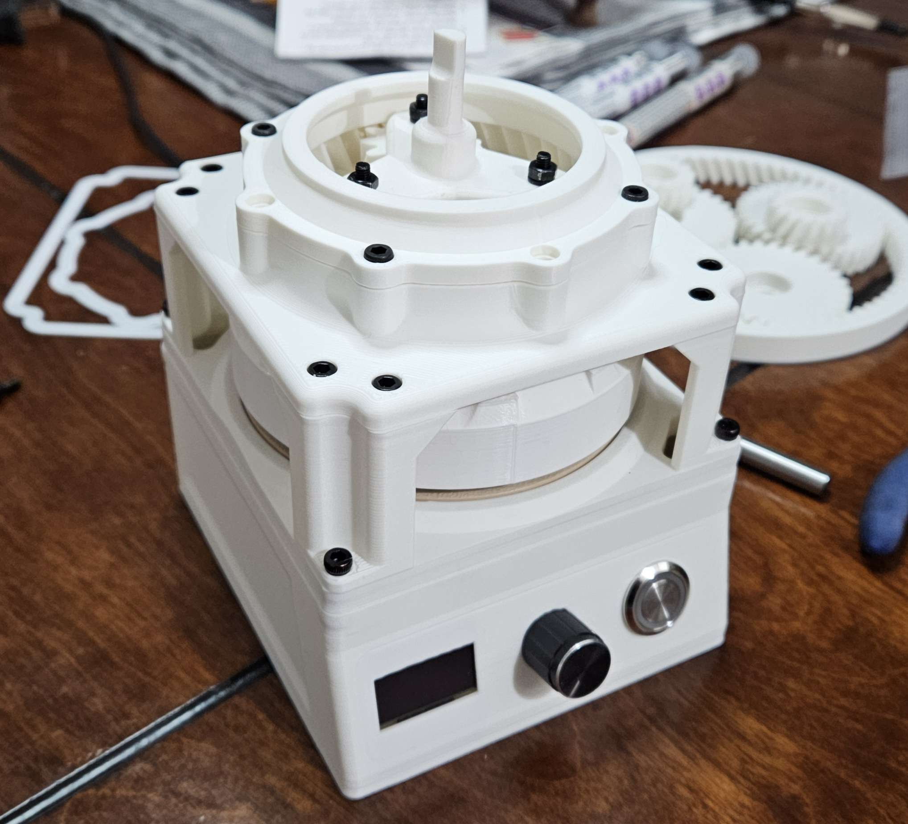
This custom BLDC motor serves as both a course project and my own investigation into robotics actuators, learning about field oriented control (FOC) fundamentals and implementation. I designed the motor to have a wide and shallow profile for high torque density while still being small enough to embed into a larger project in the future. The motor consists of 24 stator coils wound with 26awg wire, and 22 magnet poles to achieve its relatively high torque given the material constraints. As this project was also used for a course it had limitations regarding buying a stator, so it is currently printed out of PLA, with a PETG rotor. There is an MT6701 magnetic encoder with a magnet installed just below the shaft of the motor to provide position feedback and allow for position, torque, and velocity control. Additionally, I designed a planetary gearset that mounts on top with a 5:1 ratio to reduce the speed for higher torque.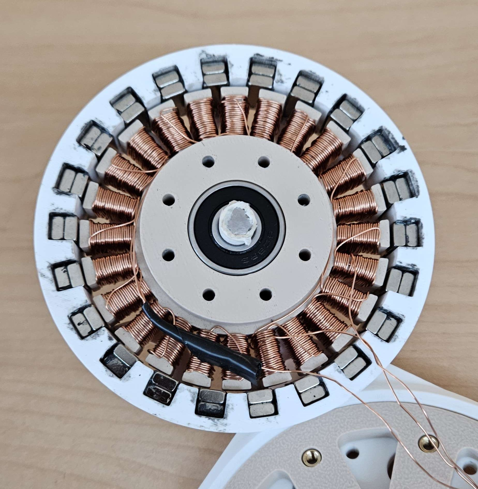
Originally I had planned on making a two stage planetary gearbox however I have decided to create a new design from the ground up. My plans are to recreate the motor with higher quality materials and explore harmonic and cycloidal reduction systems over the summer once I am no longer constrained by time and course requirements. The moving parts will be printed out of nylon due to its lower friction and higher resistance to abrasion.
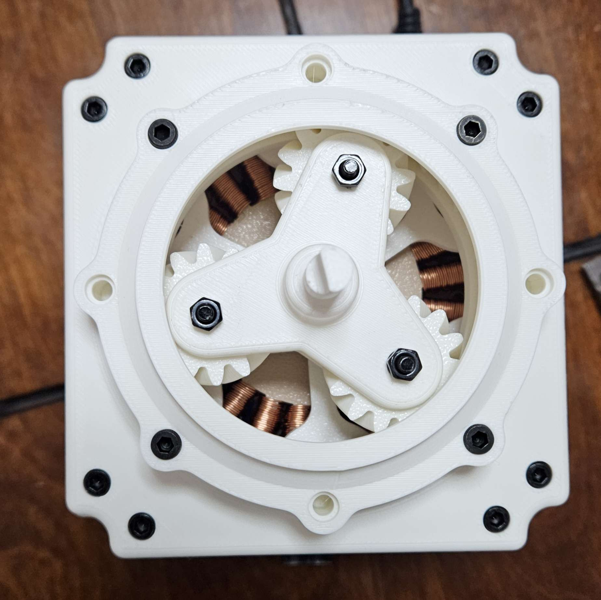
The motor stator and outrunner will be created out of a steel to provide significantly higher magnetic flux density within the motor allowing for a much higher torque (estimated to be roughly 2x higher) than the plastic design.The present height of the motor and planetary gearset is ~63mm (excluding the electronics enclosure it's mounted on) and my goal is to reduce this with the new design, utilizing the space within the stator as the first stage of the gearbox. Below are two videos showing the motor running at approximately 30% throttle with and without the gearbox attached.
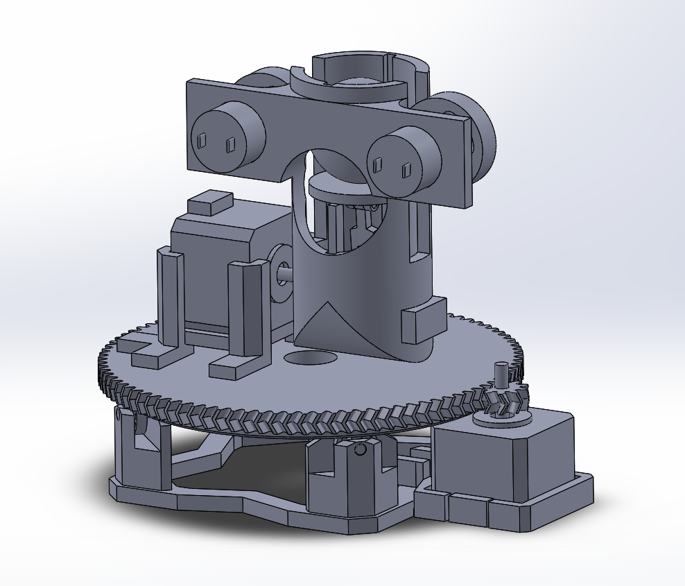
Autonomous Ball Shooter
June 2024 - August 2024
-
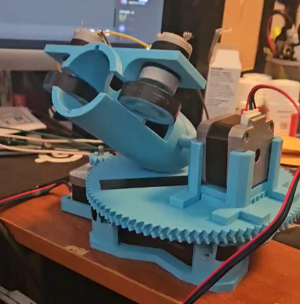
This project was my first exposure to computer vision and the integration of multiple disciplines. I collaborated with a computer science student to create a robot that could autonomously detect and shoot at cups from a distance.The assembly uses stepper motors to create a 360 degree rotating platform. On top a ball launcher is mounted that uses a servo motor for its trigger and dc motors with flywheels for shooting balls. The way the robot detects cups is through a combination of an ultrasonic sensor and a camera (either phone or webcam).
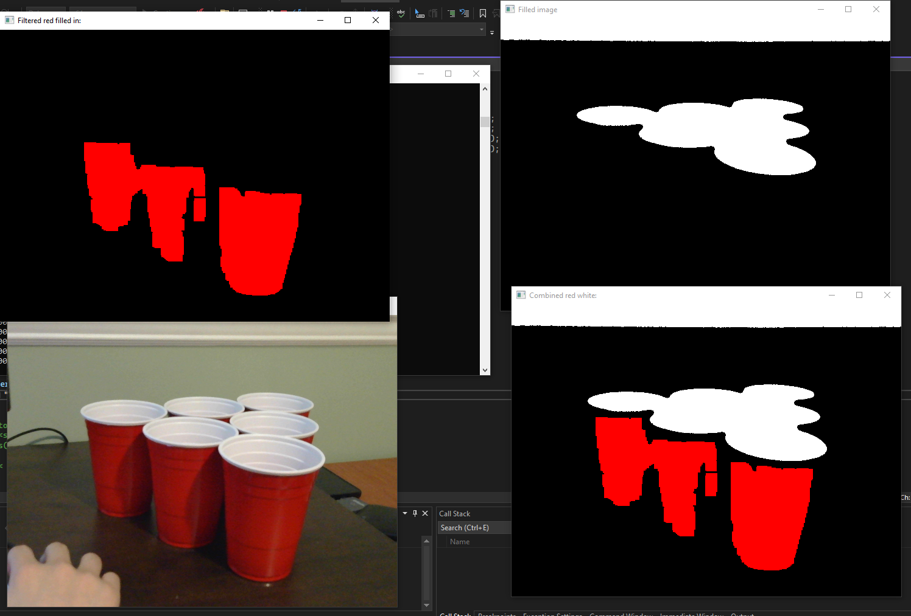
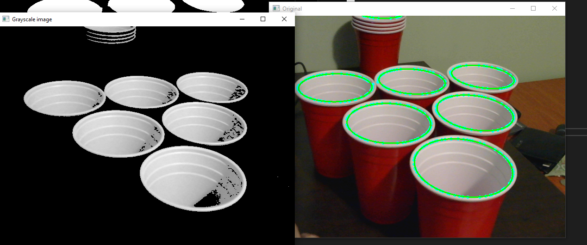
The detection algorithm works by applying a filter to the image the computer receives and the center of mass of the filtered pixels is found and determined as likely the center of the cup. To assist the position the robot aims at, it scans over the cup and the point closest to the robot is determined by the ultrasonic sensor as the center. The robot had an accurate range of between 2ft-8ft.
CAD Design Projects
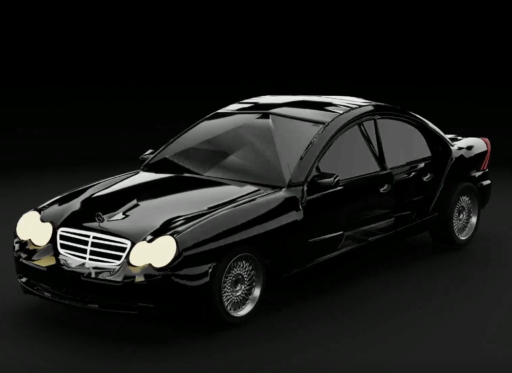
Mercedes CAD Model
January 2024 - April 2024
-
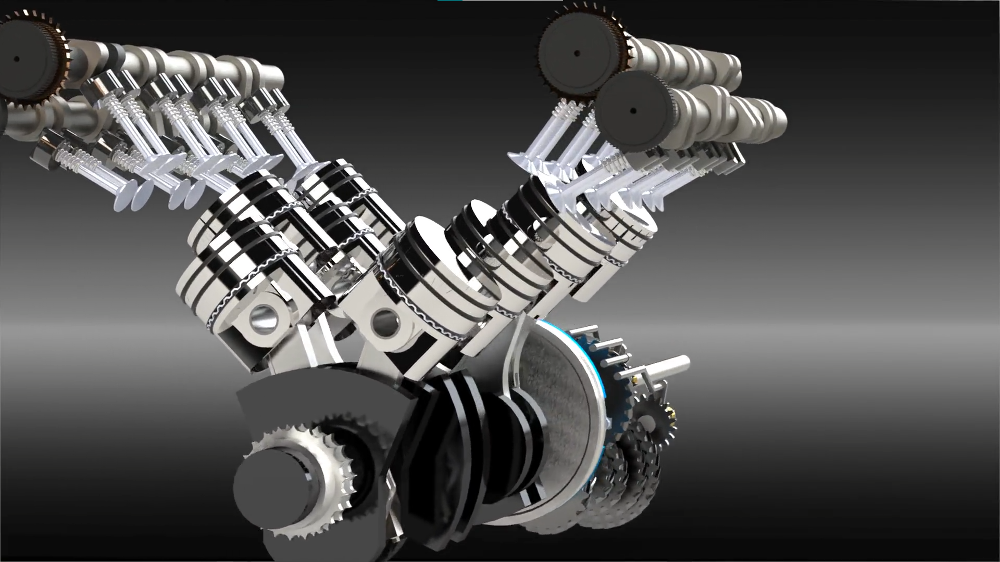
This CAD design project was a term long project in my CAD design course where everyone's projects were compared and the top 3 presented at a ceremony. As my introduction to CAD design my goal was to push the complexity of designing as far as I could with a 3 month time constraint. I led my group to design a highly accurate recreation of the Mercedes W203 car modified to have James Bond style spy features.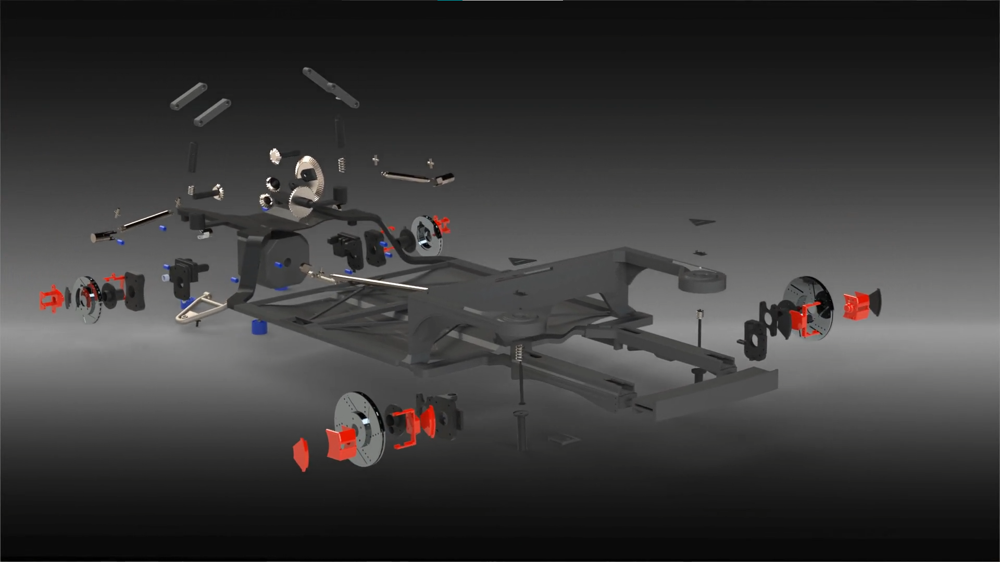
I personally designed over 100 unique parts that worked together in one large drivetrain assembly. The assembly consisted of a custom V8 engine with dual camshafts, 5 gear transmission, clutch pack, driveshafts, and differential. Through advanced mates I created an assembly that would turn the rear wheels of the car when rotating the engine's crankshaft, properly manipulating each part along the system.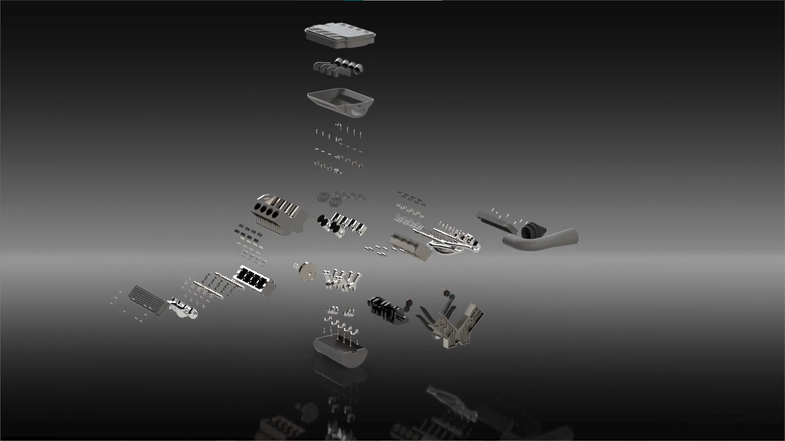
This project resulted in our group placing 3rd overall out of 70 teams even with a below average group size. Additionally, there were fully independent suspension systems integrated on the front and rear of the chassis as well as a surface modelled exterior. Overall, this project touched on nearly every aspect of Solidworks providing me with strong fundamental knowledge for a broad range of CAD design tools.
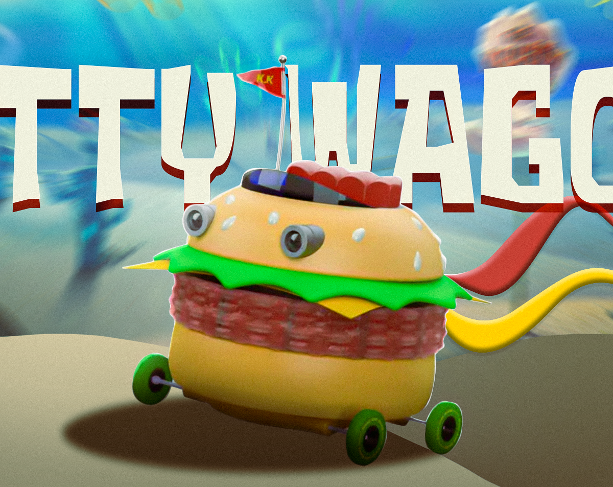
Patty Wagon
March 2025
-
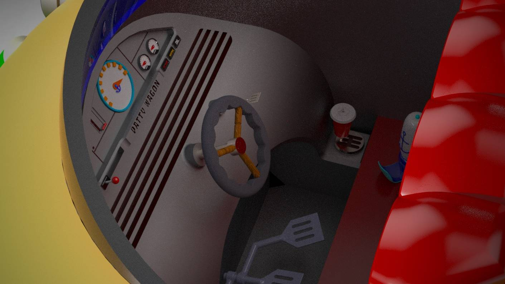
The Patty Wagon was a group submission to a design competition held by my school's engineering society. We had 24 hours to design a fictional device and present it to the other ~20 participating groups. My group chose to design the Patty Wagon from spongebob because it served as both a creative entry while having room for unexpected depth.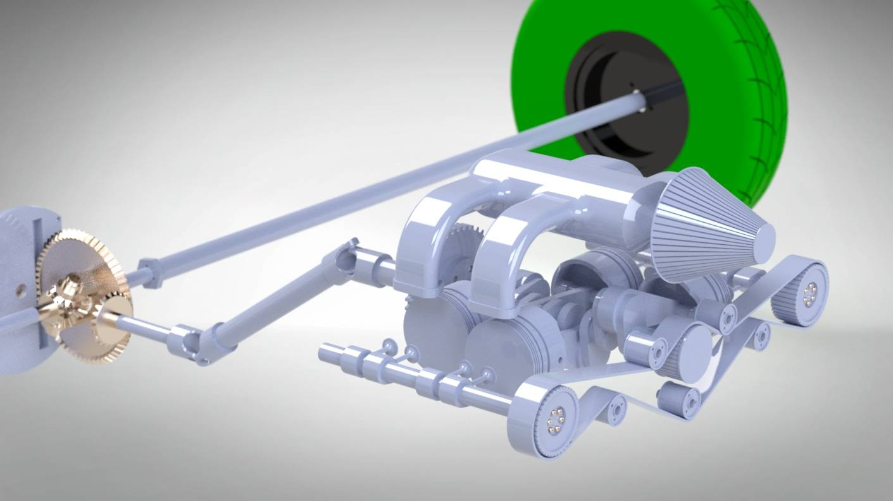
I designed a full drivetrain assembly for it over the one day period, with a 4 cylinder boxer engine, differential, and driveshafts all linked in one large assembly in addition to other cosmetic components. We achieved first place due to both the quantity and quality of parts we produced in the short period of time, utilizing advanced surfacing and assembly features for our parts. A few examples of these are surface modelling components of the burger for the vehicle and linking the cam shafts of the engine with the crank shaft through tensioners and the solidworks assembly belt feature.The submissions were judged by our CAD design professor, one of our aerospace professors, and a CAD designer engineer from a local company in Kelowna rating them on presentation and technical ability.
Mechanical Projects
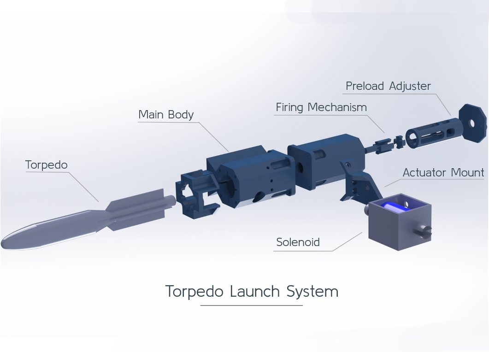
AUV Torpedo
October 2025 - November 2025
-
The torpedo launching system on Marine Robotics’ AUV has been the primary focus of mine over my duration on the team. The launch system has been designed to use a fully mechanical assembly to launch a torpedo with a pre-set power through a target at competition.
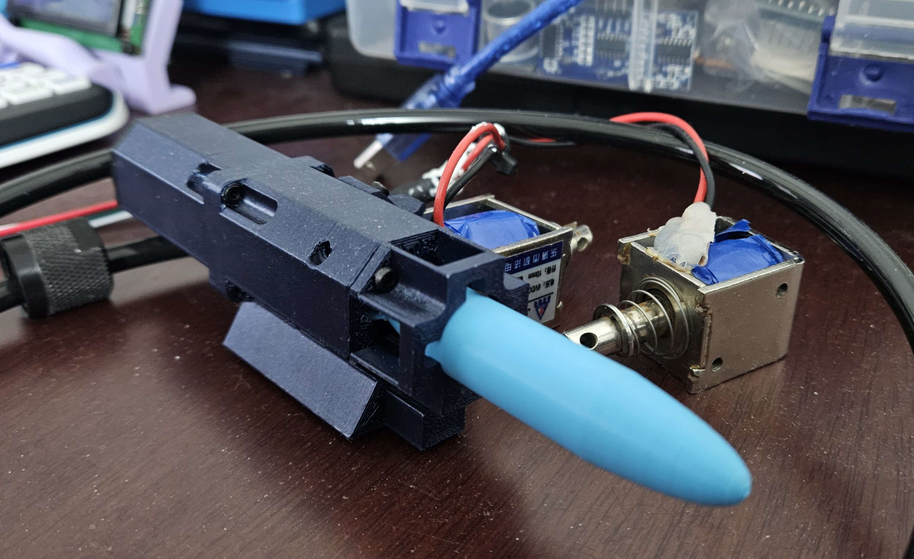
The assembly uses as little hardware as possible, relying on one spring and a set screw for adjusting its pre-load, as well as a solenoid to release the torpedo. It is held in place with geometric constraints and launched by rotating it so its fins line up with holes to launch out. The torpedo itself is tuned to be neutrally buoyant through varying the infill density of the print at different positions along the torpedo. This allows it to both reliably shoot in a straight line and in turn go farther due to lower drag forces.
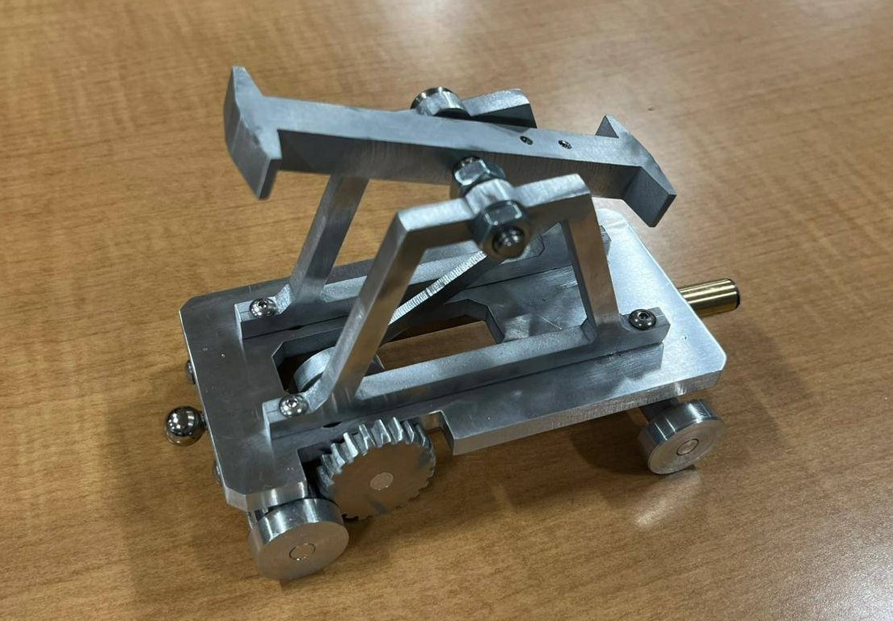
Handcar
September 2025 - November 2025
-
My manufacturing course served as my introduction to the theory of manufacturing processes and practical hands-on experience using various machines. Our course project was to design either a model train or a clamp requiring every major machining operation. I pushed the limit of what could be done with our time constraints opting to make a functional kinematic assembly.
When my design was reviewed my group was explicitly told that each year groups attempt and fail to make proper meshing gears with a functioning rotating assembly. This motivated me to make the design work, and through heavy planning outside of our labs to make as effective use of our machining time as possible we managed to achieve a working fourbar linkage that rotates as the handcar is moved along a table. Solutions had to be quickly developed along the process as there were occasional oversights in our designs, such as the gear teeth being too long. Creative uses of hardware and leaving room for adjustment in the designs worked to mitigate most major problems that arose over the duration of the project.
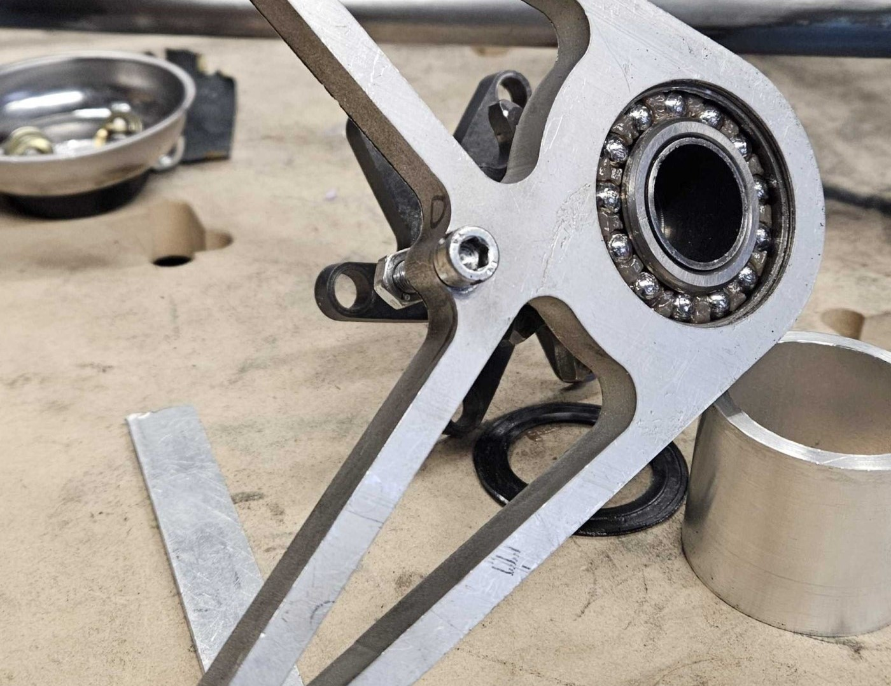
FSAE Electric Motor Mounts
September 2025 - December 2025
-
With the chassis redesign of our FSAE car we needed to re-mount the motor in a new position this year. I was tasked with repositioning the motor and optimizing the mounts to further reduce weight while also accounting for lateral deflection.
I designed the mounts to be machined out of 6061 Aluminum and sustain the high shock loads exerted on them from the acceleration of our electric motor. The mounts underwent significant FEA validation to optimize how they distribute the force of the powertrain, resulting in a reduced weight of approximately 10%. The mounts are attached to slotted tabs on the chassis designed to adjust chain tension when assembling the powertrain.
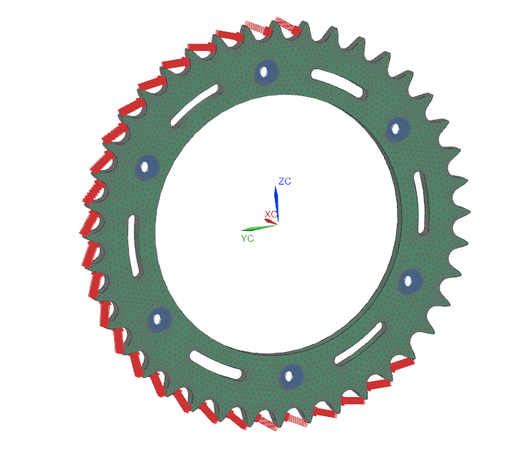
FSAE Rear Sprocket
September 2024 - April 2025
-
In 2025 we planned on competing in the Knox Mountain Climb race with our Mk.4 ICE vehicle. As our drivetrain was designed for a formula style track large modifications had to be made to tailor it to a hillclimb. My part was modifying the final drive of our car to accommodate the uphill slope and further optimize the sprocket design to reduce weight. The sprocket I designed was waterjet out of 7075 Aluminum plate and validated through simulating the force of the chain on the number of teeth under tension.
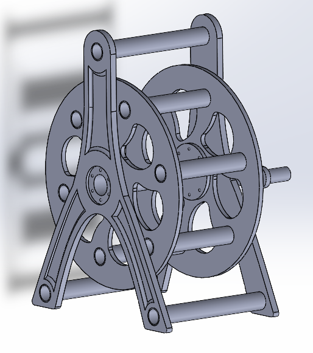
AUV Tether Spool
February 2026
-
The tether spool I designed was a side project meant to streamline some of the effort put into test days by reducing the time spent coiling and moving around our 50m long tether by hand. It is designed to use off the shelf components like PVC pipe, maintaining a low cost while outperforming 3D printed parts.
An important aspect of the spool is reducing the chance of damaging the tether due to its inability to bend or twist a significant amount. A slip ring is used to allow one end of the wire to rotate 360 degrees without twisting the other end. This allows one end of the tether to be plugged into a computer while the length going to the AUV is adjusted depending on its depth, removing any risks from 50m of wire loose on the ground.
Miscellaneous Projects
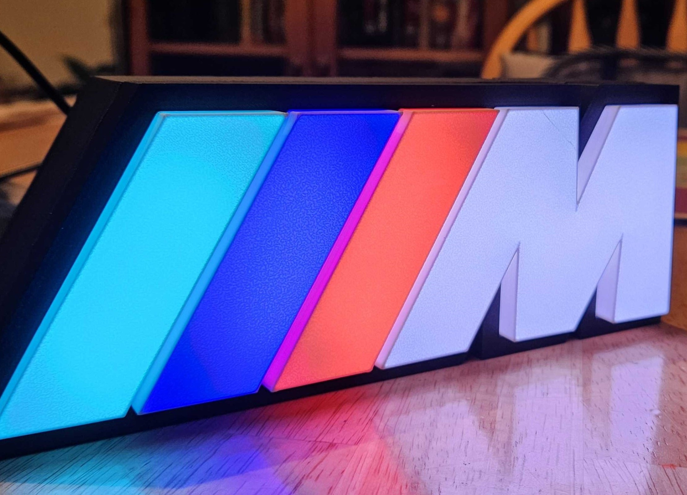
BMW Competition Logo Light
December 2025
Cool light
-
Hidden TextHidden TextHidden TextHidden TextHidden TextHidden TextHidden TextHidden TextHidden TextHidden TextHidden TextHidden TextHidden Text